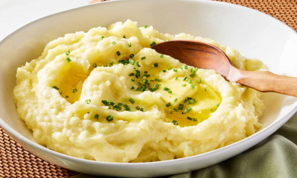

Garlic Mashed Potatoes
Ingredients
- 2 lbs potatoes
- 4 cloves garlic, minced
- 1/2 cup unsalted butter
- 1/2 cup half-and-half or milk
- Salt and pepper to taste
- Optional: fresh chives or parsley, for garnish
Directions
- Peel and cut the potatoes into chunks. Place them in a large pot and cover with cold
water. Add a pinch of salt.
- Bring the water to a boil and cook the potatoes until they are fork-tender, 15-20 minutes.
Drain well.
- In a small saucepan, heat the butter, half-and-half, and minced garlic over medium heat
until the butter is melted and the mixture is hot. Remove from heat.
- Using a potato masher or a hand mixer, mash the potatoes until smooth. Gradually add the
hot garlic mixture, stirring until well combined. Season with salt and pepper to taste.
- Transfer the mashed potatoes to a serving bowl and garnish with fresh chives or parsley
if desired. Serve hot.